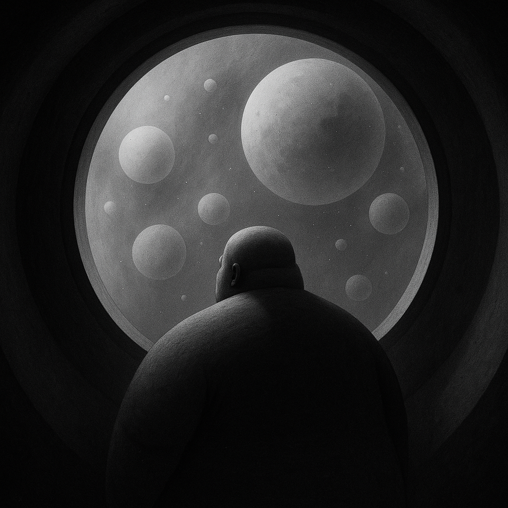

Čardak
Kratka intergalaktička epopeja o ljubavi i oblacima
Aleksandar Gazibara

Ave Gravius
Godina 2225. Dvor. Gravius je nervozan. Novi čardak i dalje nije spreman.
- Gnjido!
- Da, vase besmrtno bogoljubavičanstvo?
- Čardak?
- I dalje rade na pogonu.
- Ako ne poleti večeras, oni će. U delovima.
Dvor
Predsednički dvor je gigantska sfera poslednje generacije. Visoka 173 metra, sastavljena od 20 miliona LED modula. Na svakom Graviusov lik, istovremeno projektovan spolja i iznutra.
Za izgradnju koja je trajala 4 duge godine potrošeno je više od 140% budžeta. Ali, novi dvor je bio velelepno zdanje.
U središtu dvorane, u takozvanom diginaosu, lebdi digizorb — Graviusova lična kapsula, deset metara u prečniku. Iz nje gotovo nikada ne izlazi.
Spoljašnjost digizorba neprekidno emituje scene iz njegovog političkog života: neka vrsta highlight reel-a. Ponekad, samo blago nasmejano lice. A kad se obraća narodu: livefeed, poznat kao OMNI MEGAFEED.
Gravius svoj digizorb zove čardak. Pošto se ne kreće, s vremenom je počeo da se pretvara u amorfnu masu. A kako mu je težina neprekidno rasla, jednog dana odlučeno je da mu treba novi - veći.
Novi čardak je tehnološko čudo, delo dvorskih inženjera. Može da leti širom carstva, pa i da služi za intergalaktička putovanja. Kada zatreba, krov LED sfere se otvara, a kroz kružni otvor (nalik na Panteonov), čardak može da bude lansiran u spoljašnji svet.
Scriptum delictum
— Gnjido! — Da, besmrtni?
— Je l’ konačno uhvaćeno ono bedno piskaralo?
— Jeste, besmrtni.
— Dovedite ga smesta.
Nekoliko trenutaka kasnije, doveden je pisac koji se usudio da piše kratke satirične priče o Graviusu. Naravno, to je bilo strogo zabranjeno. Bačen je na kolena ispred digizorba.
— Da li je krenuo OMNI MEGAFEED? — upita Gravius, dok je njegovo lice visine deset metara treperilo sa zida digizorba.
— Jeste, besmrtni.
— Vrlo dobro. Kako se ti zoveš?
— Sizifon, vaše besmrtno bogoljubavičanstvo.
— Hah! Život piše drame. Sizifone, bio si hrabar. I glup. Niko ne može da piše protiv mene. Nikada. Tvoja kazna je sledeća:
Svakog dana napisaćeš novu priču u kojoj me slaviš. Ako budem zadovoljan, ideš. Ako ne budem, pišeš i dalje. Jasno, Sizifone?
— Da, besmrtni.
— Vrlo dobro. Vodite ga u tamnicu.
Zrno sumnje
Ubrzo potom, carstvom je počela da se širi opaka bolest. Podanici su sve otvorenije pokazivali nezadovoljstvo Graviusovom vladavinom. Kao da ga više ne vole.
Zgrožen, Gravius je bolest nazvao — neljubavicanstvo.
Iz dana u dan, simptomi su se pogoršavali. Sve više zaraženih, sve manje poslušnih.
A posledice su bile konkretne: niko više nije hteo u rudnike. Veltrijum je nestajao, a time możda i njegovo celo carstvo.
Kriza Veltrijuma
Veltrijum je ključni element za rad Graviusovog kvantnog jezgra, kao i za armiju digidroida, androida u njegovoj službi.
Model DD-9000 je najnaprednija verzija dosad. Nalazi se na granici svesnosti. Veruje se da će naredna generacija u potpunosti moći da zameni ljude.
Ali, problem je rudarenje. Iskopavanje Veltrijuma je vrlo rizično. Ljudi masovno ginu u rudnicima, a nestašica traje već godinama.
Robota ima, ali nema dovoljno ljudi da ih održavaju u životu.
Sve ovo Graviusa čini metanervoznim.
— Pobogu, lažite da imamo neki plan! Na primer, uvešćemo mega olakšice za porodice sa mnogo dece. Potrebni su nam ljudi! GNJIDO!
— Vaše bogoljubavičanstvo... možda je već prekasno. Iz svih delova carstva digidroidi javljaju iz da ljudi više nema.
— PROKLETINJSTVO NEMOGUĆAVNOSTI! — reče Gravius, istovremeno zabrinut i ljut. — Donesite mi OMNIGADGET!
Donesoše. Gravius ga uze u ruke.
— Hm... dobra ergonomija. Je l’ ovo stvarno kvantni gedžet?
— Da, besmrtni.
— I ima samo dva dugmeta?
— Da, besmrtni. Switch za prelazak na drugi svet. Switch & Kill — za prelazak u drugi i potpuno uništenje postojećeg.
— Hm... zabavno — reče Gravius.
Još malo ga je držao u rukama, pa odluči da proba. Pomisli: — Ovaj svet je ionako propao. Niko me više ne voli. A nema ni ko?
Kliknu Switch & Kill.
Zaslepi ga ljubičasti snop svetlosti, a zatim, belina dana. Bio je u nekom drugom svetu. Ali avaj, iz daljine dopiraše nepodnošljiva graja.
— Šta je sad ovo?
Iz Digizorba posla digidronove da izvide situaciju. Na žalost, ljudi postoje. Ogroman broj. I, izgleda, u ovom svetu uopšte nema digidroida. Samo ulice pune protesta. Transparenti. Parole. Mržnja. Prema meni?
— Pobogu, kakav je ovo svet? Switch & Kill!
Gravius je veći deo poslepodneva proveo skačući iz sveta u svet. Slomljen. Razočaran. U neverici.
— Da li je moguće da postoji ovoliko svetova u kojima sam nevoljen?
Prijateljski susret
Prošlo je nekoliko meseci otkako je Gravius prvi put uzeo kvantni gedžet u ruke. Danima i nedeljama je lutao svetovima, tražeći onaj u kome i dalje vlada bogoljubavicanstvo. Nažalost, neuspešno.
Umoran, iscrpljen, bez volje, odložio je gedžet. U tom trenutku, Digizorb je registrovao signal. Stizao je iz dubokih slojeva univerzuma.
— Hm... šta je sad ovo? — pomisli Gravius.
Poruka je glasila:
„Imam rešenje za tvoj problem. Šaljem ti koordinate. Očekujem te. Tvoj jedini prijatelj.“
— Digizorbe! Bez oklevanja, krenimo!
I tako poče Graviusovo putovanje ka središtu univerzuma.
Uključio je propulzivni pogon i poleteo brzinom jednakom brzini svetlosti. Nešto o čemu je sanjao još kao dete. On, kao jedini ikada. Niko pre. Niko posle. Ja i svetlost. Svetlost = ja.
(Možda bih mogao da se preimenujem u Luja? Odlična ideja!)
Nakon izvesnog vremena, našao se nadomak Megagantue, najveće crne rupe u poznatom univerzumu.
Znao je ponešto o tom fenomenu. Na primer: da ne bi trebalo da pređe horizont događaja (mada to znaju i osnovci).
Ali nešto mu je govorilo da nastavi.
Pa, tamo je bio njegov jedini preostali prijatelj.
Kapsula se zavrtela i prešla liniju nepovratka. Možda sam pogrešio, pomisli. Ali, i dalje sam živ. Nazdravlje, Graviuse.
A šta ako sam ostao jedini u univerzumu? Pomisao se pretvorila u sumnju, sumnja u vrtlog. A vrtlog, u tamu.Iznenada, izgubi svest.
Kad je došao sebi, pred njim je stajao stariji čovek: duga seda kosa, brada, izborano lice, mudre plave oči, uporan pogled. Ali ono što je prvo primetio bio je osmeh.
Blag, iskren, sa borama koje su se savijale oko očiju i usta. Iskreni osmeh, pomisli Gravius. Ja to umem da prepoznam.
— Ko si ti? — upita napokon Gravius.
— Reći ću ti bez okolišanja, Graviuse. Ja sam Bog.
Gravius proguta knedlu. Nije bio religiozan, ali ova situacija je bila upečatljiva.
— Ti si me zvao?
— Jesam. Video sam da si u nevolji. Hteo sam da ti pomognem. Upoznaj mog pomoćnika — Kikoca.
Gravius tek tada primeti grbavog, neuglednog, niskog čoveka koji ga je pomno pratio pogledom.
— Hm... drago mi je. Ja sam Gravius.
— Znam sve o tebi, hihihih - kezeći se, kroz zube reče Kikoc.
— Graviuse, da skratimo — reče Bog. — Imaš problem. Ja imam rešenje. Vidiš li ovo dugme?
Pokaže mu metalnu napravu.
— To je OMNIDUGME svih dugmadi.
— I čemu služi?
— Jednostavno. Pritiskom brišeš ceo univerzum. Ostaješ sam. Bez neljubavicanstva.
— Aha... znači, jednim klikom?
— Jednim.
Gravius zastade. Sve mu je bilo i iznenađujuće i kristalno jasno u isto vreme.
„Pa zašto, pobogu, ne bih hteo da uništim univerzum pun ljudi koji me ne vole?“, pomisli. „Ovaj Bog mi deluje sumnjivo. Ima li on uopšte pameti?“
— Razumeo sam. Dakle, mogu da ga pritisnem kad poželim?
— Možeš.
— Imam još samo jedno pitanje.
— Reci, Graviuse.
— Zašto... me... niko... ne voli?
Bog ga pogleda. Uzdahnu tiho.
— Graviuse... pa, zato što si bolid.
Nekoliko trenutaka — tajac.
Zatim, Bog i Kikoc prasnuše u nekontrolisani smeh koji je odzvanjao univerzumom.
Gravius besno pritisnu dugme. Ništa.
„Ipak ništa od ove lakrdije.“ pomisli.
Zatim — prasak. Gravius se rasprsnu u paru.
U prostoriji osta samo tamni oblačić.
Polako je čileo, a onda sasvim nestao.
Kao da ga nikada nije ni bilo.
Bog pogleda Kikoca.
— Jesam li ti rekao da je bolid.
← Nazad na početnu